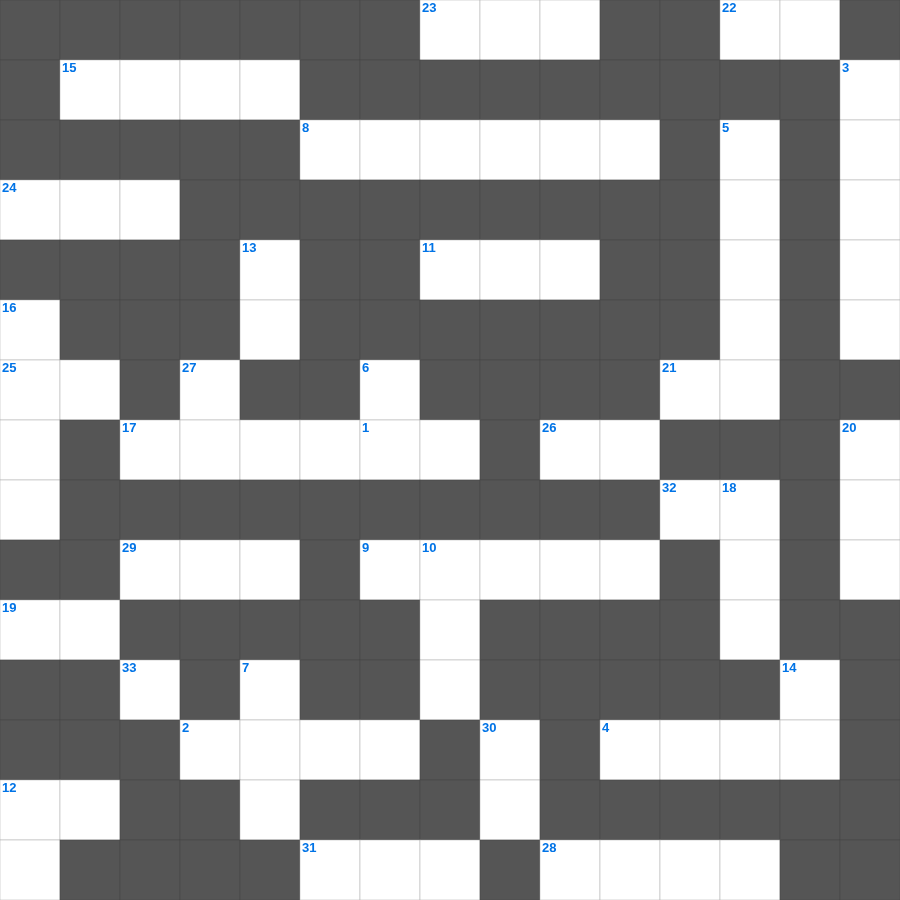

히브리서: 믿음은 바라는 것의 실상
📌 서비스 정의
십자가로세로는 교회 주보와 주일학교에서 사용할 수 있는 성경 기반 가로세로 퍼즐 서비스입니다. 성경 인물, 사건, 핵심 구절을 바탕으로 제작되었습니다. 온라인 풀이 및 인쇄 기능을 제공합니다.
📖 히브리서란?
히브리서는 예수 그리스도가 구약의 모든 제사와 제사장 제도보다 우월한 영원한 대제사장임을 설명하며, 흔들리지 않는 믿음으로 나아갈 것을 권면합니다.
📚 히브리서의 주요 사건·주제
천사보다 우월하신 그리스도 · 대제사장이신 그리스도 · 새 언약과 옛 언약의 비교 · 믿음의 본질과 믿음의 선진들(히브리서 11장) · 흔들리지 않는 나라에 대한 권면
오늘은 히브리서의 주요 내용을 담은 히브리서 말씀 퀴즈를 준비했습니다. 총 35개의 힌트가 있으며, 주일학교 교재나 성경공부 자료로 활용하기 좋습니다. 무료로 즐기는 히브리서 가로세로 퍼즐을 지금 바로 풀어보세요!

📝 가로 힌트
1. 믿음 소망 사랑 중 제일은 이것
2. 향유 옥합을 깨뜨려 발을 닦은 것
3. 너는 나 외에는 다른 이것들을 두지 말라
4. 금송아지를 만든 아론과 백성들
8. 할례를 조건으로 세겜 사람들을 죽인 사건
9. 산 위에서 예수님의 모습이 광채로 변함
11. 성경의 맨 처음 책
12. 영접하는 자 곧 그 이름을 믿는 자들에게는 하나님의 이것이 되는 권세를 주셨으니
15. 기름 부음 받은 자
17. 웃사가 법궤를 만지다 죽은 사건
19. 이스라엘이 430년 동안 거주한 나라
21. 십계명이 새겨진 것
22. 예수님이 십자가에서 돌아가신 사건
23. 예수님의 제자 수
24. 맥추절 혹은 칠칠절이라 불리는 신약의 절기
25. 예수님이 예루살렘 입성 때 타신 것
26. 만나가 썩지 않도록 안식일 전날 거둔 양
28. 다윗 왕조의 수도, 평화의 도시
29. 광야에서 엘리야에게 떡과 고기를 물어다 준 새
31. 사도 요한이 계시록을 기록한 섬
📝 세로 힌트
3. 떨기나무 불꽃 가운데서 모세가 들은 음성
5. 성경의 마지막 심판
6. 멜리데 섬에서 바울을 문 동물
7. 이스라엘 백성이 요단강을 건너 처음 도착한 성
10. 하나님과 화목하기 위해 드리는 제사
12. 진리가 너희를 이것케 하리라
13. 예수님의 육신의 아버지
14. 좋은 땅에 떨어진 씨앗은 몇 배의 결실?
16. 노동자 하루 품삯에 해당하는 은화
18. 제사장이 손발을 씻는 놋 그릇
20. 알곡과 이것의 비유
27. 여호와 이것: 준비하시는 하나님
30. 실로암 못에서 눈을 씻고 보게 된 사람
33. 넷째 날 만드신 밤의 주관자
🧩 이 퍼즐에서 배우는 내용
이 퍼즐은 히브리서: 믿음은 바라는 것의 실상의 핵심 단어와 개념을 자연스럽게 복습할 수 있도록 구성되었습니다. 주일학교 수업이나 개인 성경공부에서 학습 내용을 점검하는 용도로 바로 활용할 수 있습니다.
🧑🏫 교회 교육 자료 활용
이 퍼즐은 주일학교 교재 추천 자료로 활용할 수 있고, 주일학교 주보에 넣기 좋은 분량으로 구성되어 있습니다. 수업용 주일학교 교안에 활동지로 붙이거나, 예배 후 복습용 주일학교 공과교재로 바로 사용할 수 있습니다.
🏷️ 키워드
히브리서 말씀 퀴즈, 히브리서, 십자가로세로, 성경퀴즈, 말씀퀴즈, 가로세로퍼즐, 주일학교 교재 추천, 주일학교 주보, 주일학교 교안, 주일학교 공과교재